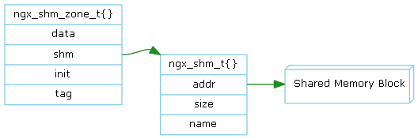
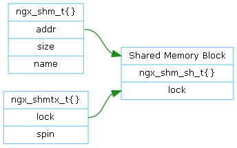

共享内存是最高效的进程内通信方式。
管理一块共享内存。
管理由mmap()或shmget()创建的共享内存空间。
Nginx的进程间锁分为原子锁和文件锁这二种实现。编译时根据系统特性选择其中一种。
在用户空间进程间锁实现的原理很简单，通过控制各个进程都能访问的对象来实现进程的互斥。
原子锁控制的对象是共享内存；文件锁控制的对象是文件句柄。

ngx_shmtx_t实现了一个原子锁，其中lock指向一个共享内存中的一个int变量。各个进程操作这个共享变量lock来实现加锁和解锁等操作。
我们先实现一个ngx_shmtx_trylock：
1) bool ngx_shmtx_trylock(ngx_shmtx_t *tx) {
2) if (*tx->lock == 0) {
3) *tx->lock = my_pid;
4) return true;
5) }
6) return false;
7) }
这个实现是有问题的。假设初始状态该锁没有被任何进程加锁，即lock为0。
在上述的情况下，进程A和进程B都成功加锁。出错的原因是lock判断2)和赋值3)这二个操作之间插入其它操作，导致赋值的假设条件被破坏。 解决方案是使判断和赋值这二个操作不可打断的，原子性的。
bool ngx_atomic_cmp_set(*lock, old, set) 的实现或者是利用系统库的实现，或者是利用cmpxchgl汇编指令实现。
1) bool ngx_shmtx_trylock(ngx_shmtx_t *tx) {
2) return *tx == 0 && ngx_atomic_cmp_set(tx->lock, 0, my_pid);
3) }
1) void ngx_shmtx_lock(ngx_shmtx_t *tx) {
2) while (true) {
3) if (ngx_shmt_trylock(tx)) return;
4) if (ncpu > 1) { // 单CPU不能自旋
5) for (n = 1, 2, 4 , 8 , 16, …, 2048) { // 自旋由短到长
6) for (i = 1, 2, 3, 4, 5, …, n) { // 自旋操作
7) ngx_cpu_pause();
8) }
9) if (ngx_shmt_trylock(tx)) return;
10) }
11) }
12) yield(); // 自动放弃CPU，挂入进程执行队列的末尾
13) }
14) }
1) void ngx_shmtx_unlock(ngx_shmtx_t *tx) {
2) ngx_atomic_cmp_set(tx->lock, my_pid, 0);
3) }
1) void ngx_shmtx_force_unlock(ngx_shmtx_t *tx, any_pid) {
2) ngx_atomic_cmp_set(tx->lock, any_pid, 0);
3) }
当长时间自旋后，仍然加锁不成功。上述的策略是自动放弃CPU，并挂入进程执行队列的末尾。 这里的策略是加入信号量等待队列，并从进程执行队列移除。当其它进程解锁时，释放一个信号，并唤醒所有等待的进程。
1) void ngx_shmtx_lock(ngx_shmtx_t *tx) {
2) while (true) {
3) if (ngx_shmt_trylock(tx)) return;
4) if (ncpu > 1) { // 单CPU不能自旋
5) for (n = 1, 2, 4 , 8 , 16, …, 2048) { // 自旋由短到长
6) for (i = 1, 2, 3, 4, 5, …, n) { // 自旋操作
7) ngx_cpu_pause();
8) }
9) if (ngx_shmt_trylock(tx)) return;
10) }
11) }
12) sem_wait(tx->semaphore);
13) }
14) }
利用系统调用fcntl()实现锁操作。 ngx_trylock_fd()、ngx_lock_fd()、ngx_unlock_fd()
当某个Worker对成功加锁后，在没有解锁之前，Worker进程异常退出。这种情况就会造成死锁。Nginx是如何处理这种情况的呢？
Worker异常退出，Master会收到SIGCHLD信号，在SIGCHLD信号处理函数中，调用waitpid()得到Worker的pid，用这个pid调用 ngx_shmtx_force_unlock()解锁。死锁得以恢复。